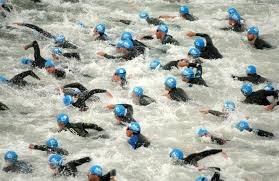

Follow the websites links that will take you to the registration site. Fill out the application with your information and submit. Congrats, you're now registered!
Follow the websites links that will take you to the registration site. Fill out the application with your information and submit. Congrats, you're now registered!Is this your first race or are you a seasoned athlete with a few tris under your belt already? The answer to this question can help determine what distance you should resister for. If this will be your first race I would suggest the Sprint distance.
Usethis linkto find a race.
Use the website TriFind.com to search for a race of your desired distance. You can search by state to find one close to you. Races generally take place from early spring through autumn.
Follow the websites links that will take you to the registration site. Fill out the application with your information and submit. Congrats, you're now registered!
Now that youre registered, the next step is to train and train